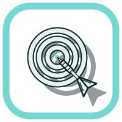

Co se naučíš
Cíle kapitoly
Po nastudování kapitoly dokážeš:
- Rozlišit spínač, přepínač a tlačítko.
- Popsat sestavu domovního vypínače a orientovat se v jeho svorkách.
- Vysvětlit funkci řazení 1, 2, 3, 4, 5, 6 a 7.
- Rozpoznat kombinace 6+6 a 6+1 a vhodně je použít.
- Vysvětlit funkci orientačního osvětlení a kompenzátoru LED.
- Přečíst principiální a montážní schéma a bezpečně připravit montážní úlohu pod dohledem.